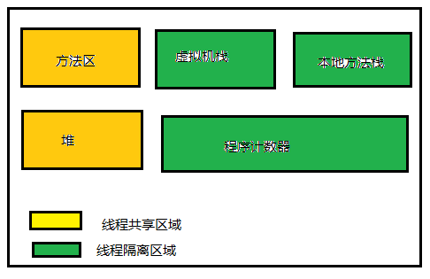

<!DOCTYPE html>


<html lang="en">


<head>
  <meta charset="utf-8" />
   
  <meta name="keywords" content="学习" />
   
  <meta name="description" content="G.zero的个人博客" />
  
  <meta name="viewport" content="width=device-width, initial-scale=1, maximum-scale=1" />
  <title>
    JVM学习笔记-运行时数据区域 |  yang-blog
  </title>
  <meta name="generator" content="hexo-theme-ayer">
  
  <link rel="shortcut icon" href="/favicon.ico" />
  
  
<link rel="stylesheet" href="/dist/main.css">

  
<link rel="stylesheet" href="https://cdn.jsdelivr.net/gh/Shen-Yu/cdn/css/remixicon.min.css">

  
<link rel="stylesheet" href="/css/custom.css">

  
  
<script src="https://cdn.jsdelivr.net/npm/pace-js@1.0.2/pace.min.js"></script>

  
  

  

</head>

</html>

<body>
  <div id="app">
    
      
    <main class="content on">
      <section class="outer">
  <article
  id="post-jvm/java-jvm-1"
  class="article article-type-post"
  itemscope
  itemprop="blogPost"
  data-scroll-reveal
>
  <div class="article-inner">
    
    <header class="article-header">
       
<h1 class="article-title sea-center" style="border-left:0" itemprop="name">
  JVM学习笔记-运行时数据区域
</h1>
 

    </header>
     
    <div class="article-meta">
      <a href="/2019/05/21/jvm/java-jvm-1/" class="article-date">
  <time datetime="2019-05-21T07:35:37.000Z" itemprop="datePublished">2019-05-21</time>
</a> 
  <div class="article-category">
    <a class="article-category-link" href="/categories/JAVA-JVM/">JAVA_JVM</a>
  </div>
  
<div class="word_count">
    <span class="post-time">
        <span class="post-meta-item-icon">
            <i class="ri-quill-pen-line"></i>
            <span class="post-meta-item-text"> Word count:</span>
            <span class="post-count">2.2k</span>
        </span>
    </span>

    <span class="post-time">
        &nbsp; | &nbsp;
        <span class="post-meta-item-icon">
            <i class="ri-book-open-line"></i>
            <span class="post-meta-item-text"> Reading time≈</span>
            <span class="post-count">7 min</span>
        </span>
    </span>
</div>
 
    </div>
      
    <div class="tocbot"></div>


  
    <div class="article-entry" itemprop="articleBody">
       
  <p>&#160; &#160; &#160; &#160;​java虚拟机在运行java程序的时候，会将内存划分成不同的数据区域，每个区域负责不同的功能，通常分为：方法区、虚拟机栈、本地方法栈。接下来我们一一介绍这些概念。</p>
<p></p>
<h3 id="1-程序计数器"><a href="#1-程序计数器" class="headerlink" title="1.程序计数器"></a>1.程序计数器</h3><p>&#160; &#160; &#160; &#160;​程序计数器是一块非常小的内存，它是当前线程所执行的字节码的行号指示器。在虚拟机的概念里，字节码解释器是通过改变这个计数器的值来选取下一个需要执行的字节码指令， 分支、循环、异常处理、线程恢复都依赖这个程序计数器来完成。<br>&#160; &#160; &#160; &#160;java多线程执行是通过不停切换处理器来分别执行各个线程实现的，也就是同一时刻只有一个处理器只能执行一条线程，每个线程执行一段时间在执行其他的线程，所以每个线程都需要有自己独立的程序计数器，才能在处理器切回自己线程的时候，继续正确执行，所以<strong>程序计时器是线程私有的</strong>。<br>&#160; &#160; &#160; &#160;程序计数器是java虚拟机唯一一个没有OutOfMemoryError的区域。</p>
<h3 id="2-java虚拟机栈"><a href="#2-java虚拟机栈" class="headerlink" title="2.java虚拟机栈"></a>2.java虚拟机栈</h3><p>&#160; &#160; &#160; &#160;java虚拟机栈描述的是java方法执行的内存模型，每个方法执行的时候，会在创建一个栈帧，存储局部变量表、操作数栈、动态链接、方法出口等。同时栈是线程私有的，生命周期与线程相同。<br>&#160; &#160; &#160; &#160;局部变量表存放了编译器可知的各种基本数据类型（boolean，byte，char,short,int,float,long,double）、对象引用和returnAddress类型。<br>&#160; &#160; &#160; &#160;64位长度的long和double类型的数据会占用两个局部变量的空间，其余的数据类型都只占用1个空间。局部变量表需要的空间，在编译期间完成分配，当进入一个方法时，这个方法需要的在栈分配的大小是完全确定的在方法运行时，局部变量表的大小不会改变。<br>&#160; &#160; &#160; &#160;这个区域规定了两种异常状况：如果线程请求的栈深度大于虚拟机所允许的深度，会抛出StackOverFlowError异常。如果虚拟机栈可以动态扩展，如果扩展时无法申请到足够的内存，就会抛出OutOfMemoryError。</p>
<h3 id="3-本地方法栈"><a href="#3-本地方法栈" class="headerlink" title="3.本地方法栈"></a>3.本地方法栈</h3><p>&#160; &#160; &#160; &#160;本地方法栈与java虚拟机栈非常相似，虚拟机栈为java方法服务，而本地方法栈为Native方法服务。</p>
<h3 id="4-java堆"><a href="#4-java堆" class="headerlink" title="4.java堆"></a>4.java堆</h3><p>&#160; &#160; &#160; &#160;堆是java虚拟机管理的最大的一块内存。在虚拟机启动的时候创建，并且是线程共享的。java堆主要用于存放对象实例。几乎所有的对象实例都在这里分配内存。<br>&#160; &#160; &#160; &#160;​java堆也是垃圾收集器主要处理的区域。很多时候也被叫做“GC堆”，从内存回收的角度来看，现在收集器基本都采用分代收集法，所有java堆可以细分为新生代和老年代，在细分一点就是Eden空间、From Survivor空间、To Survivor空间。<br>&#160; &#160; &#160; &#160;根据Java虚拟机规范的规定，Java堆可以处于物理上不连续的内存空间中，只要逻辑上是连续的即可，就像我们的磁盘空间一样。在实现时，既可以实现成固定大小的，也可以是可扩展的，不过当前主流的虚拟机都是按照可扩展来实现的（通过-Xmx和-Xms控制）。</p>
<p>&#160; &#160; &#160; &#160;如果在堆中没有内存完成实例分配，并且堆也无法再扩展时，将会抛出OutOfMemoryError异常。</p>
<h3 id="5-方法区"><a href="#5-方法区" class="headerlink" title="5.方法区"></a>5.方法区</h3><p>&#160; &#160; &#160; &#160;方法区是线程共享的一块区域，用于存储已被虚拟机加载的类信息、常量、静态变量、及时编译器编译后的代码等数据。java虚拟机规范吧方法区描述为堆的一个逻辑部分，但是他也有一个别名Non-Heap(非堆)。目的与java堆分区开。<br>&#160; &#160; &#160; &#160;习惯HotSpot虚拟机的开发者，更愿意把方法区成为“永久代”，本质上两种不等价，仅仅因为HotSpot虚拟机的设计团队选择吧GC分代收集扩展到方法区。或者说永久代来实现方法区而已。这样HotSpot的垃圾收集器可以向管理java堆一样管理这部分内存，能够省去专门为方法区编写内存管理代码的工作。<br>&#160; &#160; &#160; &#160;java虚拟机堆方法区的限制非常宽松，不需要联系的内存和可以选择固定大小或者可扩展外，还可以选择不实现垃圾收集。相对而言，垃圾收集行为在这个区域比较少出现，但是并非数据进入了方法区就不收集了。这个区域内存回收的主要目标是针对常量池的回收和对类型的卸载。一般这个区域回收条件比较苛刻，但是回收还是有必要的。<br>&#160; &#160; &#160; &#160;当方法区无法申请到足够的内存的时候，也会抛出OutOfMemoryError异常。</p>
<h3 id="6-运行时常量池"><a href="#6-运行时常量池" class="headerlink" title="6.运行时常量池"></a>6.运行时常量池</h3><p>&#160; &#160; &#160; &#160; 方法区的一部分。Class文件除了有类的版本、字段、方法、接口等描述信息外，还有一项信息就是常量池，用于存放编译器生成的各种字面量和符号引用。这部分内容将在类加载后进入方法区的运行时常量池中存放。在常量池无法在申请到内存会抛出OutOfMemoryError。<br>&#160; &#160; &#160; &#160;运行时常量池有一个重要的特征-具备动态性。java语言不要求常量一定只有在编译器才能产生，运行期间也可以能将新的常量放在池中，这种特性被开发人员利用比较多的便是String类的intern()方法。</p>
<h3 id="7-加课：OutOfMemoryError异常"><a href="#7-加课：OutOfMemoryError异常" class="headerlink" title="7.加课：OutOfMemoryError异常"></a>7.加课：OutOfMemoryError异常</h3><ul>
<li><font color='red'>堆</font></li>
</ul>
<p>java堆用于存储对象实例，只要不断创建对象，并且保证 GC Roots 到对象之间有可达路径，对象数量达到最大堆的容量限制就会产生内存溢出异常。</p>
<p>堆抛出 java.lang.OutOfMemoryError会进一步提示 java heap space.</p>
<p>要解决堆异常，一般需要通过内存映像分析工具对Dump处理的堆转储快照进行分析，重点是确定内存中对象是否是必要的，也就是要先分清楚到底是出现了内存泄漏还是内存溢出。</p>
<p>如果内存泄漏，通过工具查看泄漏对象到GC Roots的引用链。就能找到泄漏对象是通过怎样的路劲与GC Roots相关联并导致垃圾收集器无法自动回收他们的，掌握了泄漏对象的类型信息以及GC Roots引用链的信息，就能比较准确定位泄漏代码的位置。</p>
<p>如果不存在泄漏。检查虚拟机的堆参数与机器物料内存对比，是否还可以调大。代码上查看是否存在某些对象生命周期过长、持有状态时间过长的情况，尝试减少程序运行期间的内存消耗。</p>
<p>设置参数</p>
<figure class="highlight plain"><table><tr><td class="gutter"><pre><span class="line">1</span><br><span class="line">2</span><br><span class="line">3</span><br><span class="line">4</span><br><span class="line">5</span><br></pre></td><td class="code"><pre><span class="line">-Xms设置堆的最小空间大小。</span><br><span class="line"></span><br><span class="line">-Xmx设置堆的最大空间大小。</span><br><span class="line"></span><br><span class="line">-XX:+HeapDumpOnOutOfMemoryError:出现内存溢出Dump出当前内存堆转储快照，以便事后分析</span><br></pre></td></tr></table></figure>


<ul>
<li><font color='red'>栈</font></li>
</ul>
<p>栈的容量通过 -Xss 参数设置，java虚拟机描述了两种异常：</p>
<ul>
<li>线程请求的栈深度大于虚拟机有允许的最大深度，抛出 StackOverflowError异常。</li>
<li>虚拟机在扩展栈时无法申请到足够的内存空间，则会抛出OutOfMemoryError异常。</li>
</ul>
<figure class="highlight plain"><table><tr><td class="gutter"><pre><span class="line">1</span><br><span class="line">2</span><br><span class="line">3</span><br><span class="line">4</span><br><span class="line">5</span><br><span class="line">6</span><br><span class="line">7</span><br><span class="line">8</span><br><span class="line">9</span><br><span class="line">10</span><br><span class="line">11</span><br><span class="line">12</span><br><span class="line">13</span><br></pre></td><td class="code"><pre><span class="line">-Xms设置堆的最小空间大小。</span><br><span class="line"></span><br><span class="line">-Xmx设置堆的最大空间大小。</span><br><span class="line"></span><br><span class="line">-XX:NewSize设置新生代最小空间大小。</span><br><span class="line"></span><br><span class="line">-XX:MaxNewSize设置新生代最大空间大小。</span><br><span class="line"></span><br><span class="line">-XX:PermSize设置永久代最小空间大小。</span><br><span class="line"></span><br><span class="line">-XX:MaxPermSize设置永久代最大空间大小。</span><br><span class="line"></span><br><span class="line">-Xss设置每个线程的堆栈大小。</span><br></pre></td></tr></table></figure>
<p>没有直接设置老年代的参数，但是可以设置堆空间大小和新生代空间大小两个参数来间接控制。</p>
<figure class="highlight plain"><table><tr><td class="gutter"><pre><span class="line">1</span><br></pre></td><td class="code"><pre><span class="line">老年代空间大小&#x3D;堆空间大小-年轻代大空间大小</span><br></pre></td></tr></table></figure>

 
      <!-- reward -->
      
    </div>
    

    <!-- copyright -->
    
    <footer class="article-footer">
       
<div class="share-btn">
      <span class="share-sns share-outer">
        <i class="ri-share-forward-line"></i>
        分享
      </span>
      <div class="share-wrap">
        <i class="arrow"></i>
        <div class="share-icons">
          
          <a class="weibo share-sns" href="javascript:;" data-type="weibo">
            <i class="ri-weibo-fill"></i>
          </a>
          <a class="weixin share-sns wxFab" href="javascript:;" data-type="weixin">
            <i class="ri-wechat-fill"></i>
          </a>
          <a class="qq share-sns" href="javascript:;" data-type="qq">
            <i class="ri-qq-fill"></i>
          </a>
          <a class="douban share-sns" href="javascript:;" data-type="douban">
            <i class="ri-douban-line"></i>
          </a>
          <!-- <a class="qzone share-sns" href="javascript:;" data-type="qzone">
            <i class="icon icon-qzone"></i>
          </a> -->
          
          <a class="facebook share-sns" href="javascript:;" data-type="facebook">
            <i class="ri-facebook-circle-fill"></i>
          </a>
          <a class="twitter share-sns" href="javascript:;" data-type="twitter">
            <i class="ri-twitter-fill"></i>
          </a>
          <a class="google share-sns" href="javascript:;" data-type="google">
            <i class="ri-google-fill"></i>
          </a>
        </div>
      </div>
</div>

<div class="wx-share-modal">
    <a class="modal-close" href="javascript:;"><i class="ri-close-circle-line"></i></a>
    <p>扫一扫，分享到微信</p>
    <div class="wx-qrcode">
      
    </div>
</div>

<div id="share-mask"></div>  
  <ul class="article-tag-list" itemprop="keywords"><li class="article-tag-list-item"><a class="article-tag-list-link" href="/tags/JVM/" rel="tag">JVM</a></li></ul>

    </footer>
  </div>

   
  <nav class="article-nav">
    
      <a href="/2019/05/22/jvm/java-jvm-object/" class="article-nav-link">
        <strong class="article-nav-caption">上一篇</strong>
        <div class="article-nav-title">
          
            JVM学习笔记-java对象
          
        </div>
      </a>
    
    
      <a href="/2019/05/17/blog/firstBlog/" class="article-nav-link">
        <strong class="article-nav-caption">下一篇</strong>
        <div class="article-nav-title">搭建个人博客</div>
      </a>
    
  </nav>

   
<!-- valine评论 -->
<div id="vcomments-box">
  <div id="vcomments"></div>
</div>
<script src="//cdn1.lncld.net/static/js/3.0.4/av-min.js"></script>
<script src="https://cdn.jsdelivr.net/npm/valine@1.4.14/dist/Valine.min.js"></script>
<script>
  new Valine({
    el: "#vcomments",
    app_id: "chaSYi8FMdJBwzIBpxeNjqWC-gzGzoHsz",
    app_key: "PqqkLYgPkHvH1BmyQqySWnSK",
    path: window.location.pathname,
    avatar: "monsterid",
    placeholder: "给我的文章加点评论吧~",
    recordIP: true,
  });
  const infoEle = document.querySelector("#vcomments .info");
  if (infoEle && infoEle.childNodes && infoEle.childNodes.length > 0) {
    infoEle.childNodes.forEach(function (item) {
      item.parentNode.removeChild(item);
    });
  }
</script>
<style>
  #vcomments-box {
    padding: 5px 30px;
  }

  @media screen and (max-width: 800px) {
    #vcomments-box {
      padding: 5px 0px;
    }
  }

  #vcomments-box #vcomments {
    background-color: #fff;
  }

  .v .vlist .vcard .vh {
    padding-right: 20px;
  }

  .v .vlist .vcard {
    padding-left: 10px;
  }
</style>

 
     
</article>

</section>
      <footer class="footer">
  <div class="outer">
    <ul>
      <li>
        Copyrights &copy;
        2020
        <i class="ri-heart-fill heart_icon"></i> G.zero
      </li>
    </ul>
    <ul>
      <li>
        
        
        
        Powered by <a href="https://hexo.io" target="_blank">Hexo</a>
        <span class="division">|</span>
        Theme - <a href="https://github.com/Shen-Yu/hexo-theme-ayer" target="_blank">Ayer</a>
        
      </li>
    </ul>
    <ul>
      <li>
        
        
        <span>
  <span><i class="ri-user-3-fill"></i>Visitors:<span id="busuanzi_value_site_uv"></span></s>
  <span class="division">|</span>
  <span><i class="ri-eye-fill"></i>Views:<span id="busuanzi_value_page_pv"></span></span>
</span>
        
      </li>
    </ul>
    <ul>
      
    </ul>
    <ul>
      
    </ul>
    <ul>
      <li>
        <!-- cnzz统计 -->
        
      </li>
    </ul>
  </div>
</footer>
      <div class="float_btns">
        <div class="totop" id="totop">
  <i class="ri-arrow-up-line"></i>
</div>

<div class="todark" id="todark">
  <i class="ri-moon-line"></i>
</div>

      </div>
    </main>
    <aside class="sidebar on">
      <button class="navbar-toggle"></button>
<nav class="navbar">
  
  <div class="logo">
    <a href="/"></a>
  </div>
  
  <ul class="nav nav-main">
    
    <li class="nav-item">
      <a class="nav-item-link" href="/">主页</a>
    </li>
    
    <li class="nav-item">
      <a class="nav-item-link" href="/archives">归档</a>
    </li>
    
    <li class="nav-item">
      <a class="nav-item-link" href="/categories">分类</a>
    </li>
    
    <li class="nav-item">
      <a class="nav-item-link" href="/tags">标签</a>
    </li>
    
    <li class="nav-item">
      <a class="nav-item-link" href="/player">播放器</a>
    </li>
    
  </ul>
</nav>
<nav class="navbar navbar-bottom">
  <ul class="nav">
    <li class="nav-item">
      
      <a class="nav-item-link nav-item-search"  title="Search">
        <i class="ri-search-line"></i>
      </a>
      
      
    </li>
  </ul>
</nav>
<div class="search-form-wrap">
  <div class="local-search local-search-plugin">
  <input type="search" id="local-search-input" class="local-search-input" placeholder="Search...">
  <div id="local-search-result" class="local-search-result"></div>
</div>
</div>
    </aside>
    <script>
      if (window.matchMedia("(max-width: 768px)").matches) {
        document.querySelector('.content').classList.remove('on');
        document.querySelector('.sidebar').classList.remove('on');
      }
    </script>
    <div id="mask"></div>

<!-- #reward -->
<div id="reward">
  <span class="close"><i class="ri-close-line"></i></span>
  <p class="reward-p"><i class="ri-cup-line"></i>请我喝杯咖啡吧~</p>
  <div class="reward-box">
    
    
  </div>
</div>
    
<script src="/js/jquery-2.0.3.min.js"></script>


<script src="/js/lazyload.min.js"></script>

<!-- Tocbot -->


<script src="/js/tocbot.min.js"></script>

<script>
  tocbot.init({
    tocSelector: '.tocbot',
    contentSelector: '.article-entry',
    headingSelector: 'h1, h2, h3, h4, h5, h6',
    hasInnerContainers: true,
    scrollSmooth: true,
    scrollContainer: 'main',
    positionFixedSelector: '.tocbot',
    positionFixedClass: 'is-position-fixed',
    fixedSidebarOffset: 'auto'
  });
</script>

<script src="https://cdn.jsdelivr.net/npm/jquery-modal@0.9.2/jquery.modal.min.js"></script>
<link rel="stylesheet" href="https://cdn.jsdelivr.net/npm/jquery-modal@0.9.2/jquery.modal.min.css">
<script src="https://cdn.jsdelivr.net/npm/justifiedGallery@3.7.0/dist/js/jquery.justifiedGallery.min.js"></script>

<script src="/dist/main.js"></script>

<!-- ImageViewer -->

<!-- Root element of PhotoSwipe. Must have class pswp. -->
<div class="pswp" tabindex="-1" role="dialog" aria-hidden="true">

    <!-- Background of PhotoSwipe. 
         It's a separate element as animating opacity is faster than rgba(). -->
    <div class="pswp__bg"></div>

    <!-- Slides wrapper with overflow:hidden. -->
    <div class="pswp__scroll-wrap">

        <!-- Container that holds slides. 
            PhotoSwipe keeps only 3 of them in the DOM to save memory.
            Don't modify these 3 pswp__item elements, data is added later on. -->
        <div class="pswp__container">
            <div class="pswp__item"></div>
            <div class="pswp__item"></div>
            <div class="pswp__item"></div>
        </div>

        <!-- Default (PhotoSwipeUI_Default) interface on top of sliding area. Can be changed. -->
        <div class="pswp__ui pswp__ui--hidden">

            <div class="pswp__top-bar">

                <!--  Controls are self-explanatory. Order can be changed. -->

                <div class="pswp__counter"></div>

                <button class="pswp__button pswp__button--close" title="Close (Esc)"></button>

                <button class="pswp__button pswp__button--share" style="display:none" title="Share"></button>

                <button class="pswp__button pswp__button--fs" title="Toggle fullscreen"></button>

                <button class="pswp__button pswp__button--zoom" title="Zoom in/out"></button>

                <!-- Preloader demo http://codepen.io/dimsemenov/pen/yyBWoR -->
                <!-- element will get class pswp__preloader--active when preloader is running -->
                <div class="pswp__preloader">
                    <div class="pswp__preloader__icn">
                        <div class="pswp__preloader__cut">
                            <div class="pswp__preloader__donut"></div>
                        </div>
                    </div>
                </div>
            </div>

            <div class="pswp__share-modal pswp__share-modal--hidden pswp__single-tap">
                <div class="pswp__share-tooltip"></div>
            </div>

            <button class="pswp__button pswp__button--arrow--left" title="Previous (arrow left)">
            </button>

            <button class="pswp__button pswp__button--arrow--right" title="Next (arrow right)">
            </button>

            <div class="pswp__caption">
                <div class="pswp__caption__center"></div>
            </div>

        </div>

    </div>

</div>

<link rel="stylesheet" href="https://cdn.jsdelivr.net/npm/photoswipe@4.1.3/dist/photoswipe.min.css">
<link rel="stylesheet" href="https://cdn.jsdelivr.net/npm/photoswipe@4.1.3/dist/default-skin/default-skin.min.css">
<script src="https://cdn.jsdelivr.net/npm/photoswipe@4.1.3/dist/photoswipe.min.js"></script>
<script src="https://cdn.jsdelivr.net/npm/photoswipe@4.1.3/dist/photoswipe-ui-default.min.js"></script>

<script>
    function viewer_init() {
        let pswpElement = document.querySelectorAll('.pswp')[0];
        let $imgArr = document.querySelectorAll(('.article-entry img:not(.reward-img)'))

        $imgArr.forEach(($em, i) => {
            $em.onclick = () => {
                // slider展开状态
                // todo: 这样不好，后面改成状态
                if (document.querySelector('.left-col.show')) return
                let items = []
                $imgArr.forEach(($em2, i2) => {
                    let img = $em2.getAttribute('data-idx', i2)
                    let src = $em2.getAttribute('data-target') || $em2.getAttribute('src')
                    let title = $em2.getAttribute('alt')
                    // 获得原图尺寸
                    const image = new Image()
                    image.src = src
                    items.push({
                        src: src,
                        w: image.width || $em2.width,
                        h: image.height || $em2.height,
                        title: title
                    })
                })
                var gallery = new PhotoSwipe(pswpElement, PhotoSwipeUI_Default, items, {
                    index: parseInt(i)
                });
                gallery.init()
            }
        })
    }
    viewer_init()
</script>

<!-- MathJax -->

<!-- Katex -->

<!-- busuanzi  -->


<script src="/js/busuanzi-2.3.pure.min.js"></script>


<!-- ClickLove -->

<!-- ClickBoom1 -->

<!-- ClickBoom2 -->

<!-- CodeCopy -->


<link rel="stylesheet" href="/css/clipboard.css">

<script src="https://cdn.jsdelivr.net/npm/clipboard@2/dist/clipboard.min.js"></script>
<script>
  function wait(callback, seconds) {
    var timelag = null;
    timelag = window.setTimeout(callback, seconds);
  }
  !function (e, t, a) {
    var initCopyCode = function(){
      var copyHtml = '';
      copyHtml += '<button class="btn-copy" data-clipboard-snippet="">';
      copyHtml += '<i class="ri-file-copy-2-line"></i><span>COPY</span>';
      copyHtml += '</button>';
      $(".highlight .code pre").before(copyHtml);
      $(".article pre code").before(copyHtml);
      var clipboard = new ClipboardJS('.btn-copy', {
        target: function(trigger) {
          return trigger.nextElementSibling;
        }
      });
      clipboard.on('success', function(e) {
        let $btn = $(e.trigger);
        $btn.addClass('copied');
        let $icon = $($btn.find('i'));
        $icon.removeClass('ri-file-copy-2-line');
        $icon.addClass('ri-checkbox-circle-line');
        let $span = $($btn.find('span'));
        $span[0].innerText = 'COPIED';
        
        wait(function () { // 等待两秒钟后恢复
          $icon.removeClass('ri-checkbox-circle-line');
          $icon.addClass('ri-file-copy-2-line');
          $span[0].innerText = 'COPY';
        }, 2000);
      });
      clipboard.on('error', function(e) {
        e.clearSelection();
        let $btn = $(e.trigger);
        $btn.addClass('copy-failed');
        let $icon = $($btn.find('i'));
        $icon.removeClass('ri-file-copy-2-line');
        $icon.addClass('ri-time-line');
        let $span = $($btn.find('span'));
        $span[0].innerText = 'COPY FAILED';
        
        wait(function () { // 等待两秒钟后恢复
          $icon.removeClass('ri-time-line');
          $icon.addClass('ri-file-copy-2-line');
          $span[0].innerText = 'COPY';
        }, 2000);
      });
    }
    initCopyCode();
  }(window, document);
</script>


<!-- CanvasBackground -->


    
  </div>
</body>

</html>